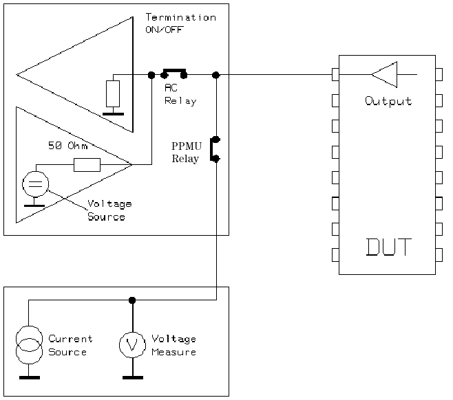
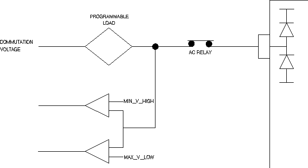

OutputDC
This test method measures the dc output voltages of the DUT under specific current load conditions.
During the measurement, the device is kept in a stable condition. You can use this test method to measure the output low and output high voltages individually, or together in a single test.
The test method can be executed:
- using the Pin PMU (with or without termination)
- or using the programmable load and the comparator.Note This test method does NOT support BURST and Multiport Burst Pattern in case of PMU measurement.
This test method supports test table. But you need to enter the test names manually in the parameter. You can use both test table and testflow limits in a testflow. The test table has higher priority than testflow limits. If a test name used in the test flow is defined in both test table and testflow limits, the value defined in the test table will be used.
Output DC test using PMU

If not already connected, the test system is set to the CONNECTED state, with the AC relays closed, the sequencer set to BREAK and the DPS set to the voltage programmed in Level Setup.
Next, the sequencer label is checked. The label must specify a sequencer program containing a linear vector sequence. The sequencer jumps over any match loops and repeat vectors. Vectors making up an endless (unconditional) loop are executed once to the end of the loop whereupon the sequencer stops.
The test method scans the expected data pattern for a low or a high state (depending on the specified test) on a pin-by-pin basis. The scan starts either at the vector address specified by the vector label, or at the vector address specifying a range of vectors or two single vectors that you enter. For the relationship between the vector label and the vector range/single vectors see the "Dependencies" section.
The software looks for the first occurrence of a low or a high state on each pin and notes the vector addresses where these occur. If measurement of both levels is specified, it then continues the scan looking for the opposite state on each pin, again noting the vector addresses. The software generates a warning if it cannot find a low or a high state for any of the pins within the search range.
The test method programs the delay counter to stop the sequencer at the specified vectors where the measurement should take place. All high and low levels for the specified pins that can be measured at these vector addresses are measured. Then the analyzer delay counter is programmed to the next specified vector and so on until all the pins have been measured at the low and high state (if specified).
During the measurement, the sequencer is set to the break state, and, depending on how the termination flag is set (ON or OFF), the measurement is taken by closing the AC relay (termination ON) and PPMU relay, or closing the PPMU relay and opening the AC relay (termination OFF).
If termination is ON for io pins, and for o pins with term type termination, the following formula applies:
DUT output current = (PMU current) + (test system driver current)
Because the DUT output current in this case can be high enough to damage your device, the test method generates a warning, reminding you to set the force current to a low value, if the specified current limit is > 1 µA.
The PMU is connected to the DUT pin. The PMU is now working in current force mode by supplying the specified force current. The current direction is specified by sign. The DUT output voltage can now be measured by the PMU.
Dependencies
- Functional test must pass.
- Linear vector sequences must be used (any match loops or repeat vectors contained therein are ignored).
- DUT outputs must be kept stable until end of the voltage measurement by setting the correct break vector.
- Minimum scanned vector range is 2, maximum scanned vector range the end of installed vector memory respectively.
- Both low and high expected data states for the specified pins must be present within the specified vector range. A warning message is issued if this is not the case.
- If the measurement is made with termination (AC relay closed for measurement), the primary level set must not use the programmable load because it cannot be compensated for.
Output DC test using the programmable load

The output dc test is executed using two functional tests if both the high and low levels are to be measured. The programmable load forces the current at the device output pins.
Note that a positive current flows into the device and a negative current flows out of the device. The commutation voltage for the programmable load is automatically set and its value depends on the pass value that you enter.
It is very important that the timing set used for the test contains as slow a period as possible as this is a dc measurement and not an ac measurement.
Prior to execution of the test, the status of the test system is checked to determine if it is currently connected or disconnected. If it is disconnected, then the CONNECT() is executed. If it is already connected, then the output dc test method continues.
Pass/Fail Tests
To test for the low level pass value, the low level of the comparator is set to maxPassLow for the pins specified in pinlist and a functional test is executed. A pass is returned if:
measured value ≤ maxPassLow
To test for the high level pass value, the high level of the comparator is set to minPassHigh for the pins specified in pinlist and a functional test is executed. A pass is returned if:
minPassHigh ≤ measured value
In GPF mode, to achieve best throughput, you need to do the following items as below:
- create a new level set as followed:
VOH= pass min voltage of high level
VOL= pass max voltage of low level
- select the new level set as primary for test suite
- modify the code example in the function
doMeasurementByProgramLoad()in OutputDCUtil.hpp file according to the comments
Value Test
The output dc test using the programmable load can also be used to measure the actual high and low pass values.
To measure the maximum low pass value, a binary search is performed, varying the low level of the comparator between the high level defined in the primary level set and the test system low threshold limit (-2.0V).
As maximum low pass value can be different for different pins, the test result reports a minimum and a maximum value for the low pass value threshold. In case of per pin list evaluation the minimum and maximum values are identical.
To measure minimum high level value, a binary search is performed, varying the high level of the comparator between the low level defined in the primary level set and the test system high threshold limit.
A minimum and a maximum high pass value threshold is reported for the pins of a pin list. In case of parallel evaluation and for single pins, the minimum and maximum values are identical.
Dependencies
- Functional test must pass.
- Both low and high expected data states for the specified pins must be present in the specified functional test.
- The output DC test is not possible for devices using ECL technology. This is because for ECL devices, current must always flow into the device. For the output dc measurement, the commutation voltage of the programmable load is always automatically set. For current to flow into the device, the commutation voltage is always set to 1 V less than the specified pass value of the test. As the low threshold for the commutation voltage is -2 V, maxPassLow must always be ≥ -1 V, which is not possible for ECL devices.
Parameter |
Type |
Description |
|---|---|---|
pinlist |
PinString |
The pins to be tested. The valid pin types are output pins and I/O pins. |
mode |
string |
The measurement mode. It can be PPMU, PPMUTERM, or PROGRAMLOAD. |
measureLevel |
string |
The level to measure. It can be LOW, HIGH or BOTH. |
forceCurrentLow |
SpecValue |
The force current for low level test. Usually it is a positive value. It is specified in the format of "value[unit]". The default value is "0[uA]". |
forceCurrentHigh |
SpecValue |
The force current for high level test. Usually it is a negative value. It is specified in the format of "value[unit]". The default value is "0[uA]". |
maxPassLow |
SpecValue |
The maximum of the pass voltage for low level test. It is specified in the format of "value[unit]". The default value is "0[V]". |
minPassLow |
SpecValue |
The minimum of the pass voltage for low level test. It is specified in the format of "value[unit]". The default value is "0[V]". |
maxPassHigh |
SpecValue |
The maximum of the pass voltage for high level test. It is specified in the format of "value[unit]". The default value is "0[V]". |
minPassHigh |
SpecValue |
The minimum of the pass voltage for high level test. It is specified in the format of "value[unit]". The default value is "0[V]". |
settingTimeLow |
SpecValue |
The settling time for low level test. It is specified in the format of "value[unit]". The default value is "0[ms]". |
settlingTimeHigh |
SpecValue |
The settling time for high level test. FIt is specified in the format of "value[unit]". The default value is "0[ms]". |
vectorRange |
string |
The vector range to be used for low or high level output. It can be in the following three formats: number: The output of the first number of vector will be used in the test. number1,number2: Only the output of vector number1 and number2 will be used. number1-number2: The output of the vectors from number1 to number2 will be used. |
testName |
string |
The test names to be used as limits. Default is (OutputDC_LowLevel[V],OutputDC_HighLevel[V]). If you want to use the test names defined in the test table or testflow limits, type in the test names manually. Make sure the test names are in the Test name column of the test table (Refer to Structure of a TMLimits CSV file) or in the Test Name column of Tests page of Flow Data Editor. |
output |
string |
Controls how to output the per pin test result. It can be:
ShowFailOnly: Only outputs the failed pin result to the report window. |
Limits
OutputDC_LowLevel[V] |
The pass range of the measured low level voltage in unit [V]. |
OutputDC_HighLevel[V] |
The pass range of the measured high level voltage in unit [V]. |
Implementation pseudo code
IF measure with programmable load THEN
store the sequencer status
IF not already connected THEN
connect DUT
ENDIF
FOR all measurement positions DO
IF low level measurement specified THEN
measure the low level output DC with FW
retrieve the test result
ENDIF
IF high level measurement specified THEN
measure the high level output DC with FW
retrieve the test result
ENDIF
restore the sequencer status
ELSE
store the sequencer status
IF not already connected THEN
connect DUT
ENDIF
FOR all measurement positions DO
IF low level measurement specified THEN
measure the low level output DC with FW
retrieve the test result
ENDIF
IF high level measurement specified THEN
measure the high level output DC with FW
retrieve the test result
ENDIF
restore the sequencer status
ENDIF
datalog test resultsFunctional changes
- Introduced before SmarTest 6.3.2
- SmarTest 6.5.0: Change parameter type of pinlist to PinString for UTM library.
- SmarTest 6.5.2: Remove the "_unit" from the parameter name.
- SmarTest 6.5.2: Change parameter type of forceCurrentLow, forceCurrentHigh, maxPassLow, minPassLow, maxPassHigh, minPassLow, settingTimeLow, settingTimeHigh, spmuClampVoltageLow and spmuClampVoltageHigh to SpecValue for UTM library.
- SmarTest 7.0.3: Classic test method library is removed.
- SmarTest 7.1.1: Test table is supported in TML 2.1.1.
- SmarTest 7.1.1: Mixed usage of test table and testflow limits in one testflow is supported in TML 2.1.1.
- SmarTest 7.1.1: New parameter testName is added in TML 2.1.1.
- SmarTest 7.2.1: New option ShowFailOnly for the parameter output in TML 2.2.0.